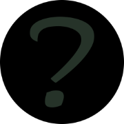

Welcome!
Web3 ForeTeller is ready to generate magic salt and utilize its powers to unveil the shrouded mysteries. Try to focus on your sphere of interest and submit your inquiry..

As you move your mouse over the oval widget above, you generate stars at random locations within your cursor's vicinity. Each star has a random size, brightness, and color. Gold stars are rare! If you are able to generate only 0-2 gold stars at once, your luck is running low today. If you can generate 3-4 stars by moving your mouse, everything is fine, but if you are able to get 5+ gold stars at once, your supply of luck is enormous!
To use these features, please switch to Base network.